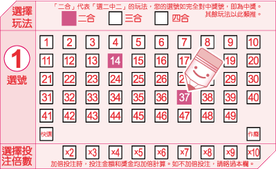
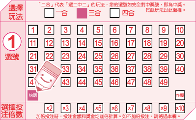
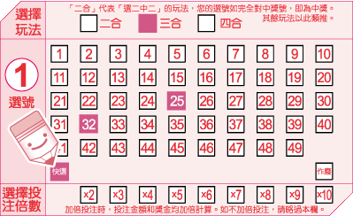
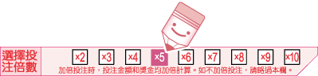
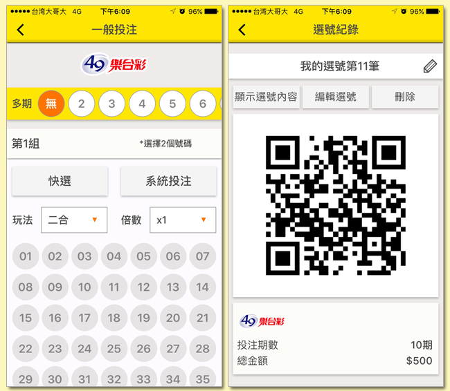

每張 49 樂合彩選號單上都有 3 個選號區，最多可以投注 3
組選號。每個選號區都設有 49
個號碼(01~49)，您可以依照自己的喜好，自由選用以下幾種不同的方式填寫選號單，進行投注。
* 注意，在同一張選號單上，各選號區可分別採用不同的投注方式。
選號單之正確劃記方式有三種，塗滿

、打叉

或打勾

，但請勿超過格線。填寫步驟如下：
1.選擇玩法
A.二合︰
即「選二中二」的玩法，選擇此玩法時，您必須填選2個號碼，作為您的選號。
B.三合︰
即「選三中三」的玩法，選擇此玩法時，您必須填選3個號碼，作為您的選號。
C.四合︰
即「選四中四」的玩法，選擇此玩法時，您必須填選4個號碼，作為您的選號。
下圖的範例為「二合」玩法。
2.劃記選號
A.自行選號︰
在選號區中，自行從 01~49
的號碼中填選與您的玩法相對應個數之號碼進行投注。
例如，如果您要玩「二合」玩法，則您必須在選號區內填選2個號碼。

B.快選︰
在選號區中，劃記「快選」，投注機將根據您選擇的玩法，隨機產生一組號碼。
例如，如果您在「玩法」欄中填選的是「三合」，且您劃記「快選」，投注機將為您隨機產生3個號碼。

C.部分快選︰
在選號區中，從 01~49
的號碼中自行填選少於玩法數的號碼，並劃記「快選」，投注機將自動為您選出剩下的號碼。
以下圖為例，如果您選擇「三合」玩法，自選 2 個號碼—25 和 32，並劃記
「快選」，其餘 1 個號碼將由投注機為您快選產生。

D.系統組合︰
您可以在單一選號區中填選多於您的玩法數的號碼進行投注，系統將就您的選號排列出所有可能的號碼組合。
以下表為例，如果您選擇「三合」玩法，並填選 4 個號碼—12、17、36、40—
進行投注，則您投注之所有號碼組合將為︰
第一注：12、17、36
第二注：12、17、40
第三注：12、36、40
第四注：17、36、40
系統組合所產生的總注數和總投注金額將因您所選擇的玩法和選號數而異
。請參見下表:
| |
二合 |
三合 |
四合 |
| 選號數量 |
注數 |
金額 |
注數 |
金額 |
注數 |
金額 |
| 3 |
3 |
$75 |
|
|
|
|
| 4 |
6 |
$150 |
4 |
$100 |
|
|
| 5 |
10 |
$250 |
10 |
$250 |
5 |
$125 |
| 6 |
15 |
$375 |
20 |
$500 |
15 |
$375 |
| 7 |
21 |
$525 |
35 |
$875 |
35 |
$875 |
| 8 |
28 |
$700 |
56 |
$1,400 |
70 |
$1,750 |
| 9 |
36 |
$900 |
84 |
$2,100 |
126 |
$3,150 |
| 10 |
45 |
$1,125 |
120 |
$3,000 |
210 |
$5,250 |
E.系統配號
您可以在選號區內填選比您的玩法數少1個號碼(玩法選號數-1)的選號，剩下1個號碼將由系統自剩餘的號碼中使用每一個號碼加以搭配出有效的投注號碼組。
舉例來說，如果您選擇「四合」玩法，並填選 1、2、3
等3個號碼進行投注，則投注機所排列出的所有號碼組合將為︰
第一注：1、2、3、4
第二注：1、2、3、5
第三注：1、2、3、6
第四注：1、2、3、7
：
：
第四十五注︰1、2、3、48
第四十六注︰1、2、3、49
系統配號所產生的注數將因您所選擇的玩法及其自選號碼數而異。請參見下表︰
| 玩法 |
自選號碼數 |
總注數 |
總投注金額 |
| 二合 |
1 |
48 |
$1,200 |
| 三合 |
2 |
47 |
$1,175 |
| 四合 |
3 |
46 |
$1,150 |
3.選擇投注倍數
您可就某組選號加倍投注，投注倍數最高為 10
倍。如果您不想加倍投注，則不需要填寫該欄。

4.劃記投注期數
您可以利用選號單上的「多期投注」欄位，就該張選號單上的投注內容連續投注
2~10 期(含當期)，如果您不想投注多期，則不需要填寫該欄。
* 注意，您在多期投注期間不得中途要求退/換彩券，但如果對中任何一期的
獎項，可直接至任一投注站或中國信託商業銀行(股)公司指定兌獎處兌獎，不需等到最後一期開獎結束。兌獎時，投注站或中國信託商業銀行(股)公司指定兌獎處將列印出一張「交換票」給您，供您在剩餘的有效期數內對獎。
如果您的智慧型手機為iOS或Android之作業系統，您可先下載
「台灣彩券」APP，並利用 APP
中的「我要選號」功能，填寫投注內容。每張電子選號單皆將產生一個 QR code，
至投注站掃描該 QR Code，即可自動印出彩券，付費後即完成交易。

* 購券者的選號若遇到當時該組選號之銷售注數上限時，即無法購得。